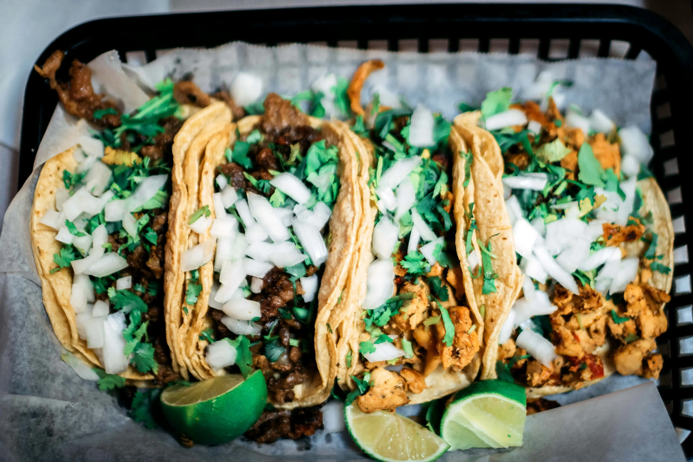

Vegan Black Bean Tacos

These Vegan Black Bean Tacos are a quick and easy meal that's packed with flavor and protein.
With a smoky black bean filling and fresh toppings, they're perfect for Taco Tuesday or any day of the week.
Ingredients:
- 1 tablespoon olive oil
- 1 small onion, finely chopped
- 2 garlic cloves, minced
- 1 teaspoon ground cumin
- 1 teaspoon smoked paprika
- 1 can (400g) black beans, drained and rinsed
- 1 cup corn kernels (fresh or frozen)
- Salt and pepper to taste
- 8 small corn tortillas
For Toppings:
- 1 avocado, diced
- 1 cup cherry tomatoes, halved
- 1/4 cup red onion, finely chopped
- Fresh cilantro, chopped
- Lime wedges
- Hot sauce (optional)
Instructions:
-
Heat the olive oil in a skillet over medium heat. Add the onion and sauté until soft, about 5 minutes.
-
Stir in the garlic, cumin, and smoked paprika, cooking for another minute until fragrant.
-
Add the black beans and corn, cooking until heated through. Season with salt and pepper.
-
Warm the tortillas in a dry skillet or microwave.
-
Assemble the tacos by filling each tortilla with the black bean mixture and adding your favorite toppings.
-
Serve with lime wedges and hot sauce on the side.
These Vegan Black Bean Tacos are a quick, nutritious, and delicious meal that's sure to become a family favorite.
They're versatile and can be customized with your favorite toppings.
Go Back to find more awesome recipes!